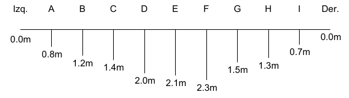

Table of Contents
1. Aforos
70.26 - Hidráulica Agrícola y Saneamiento - 1-2022
1.1. Aforos con velocímetros
1.1.1. 1: Hallar la velocidad del agua sabiendo:
a.
- \(k = 0.25 m \text{ paso hidráulico}\)
- \(\Delta = 0.025 \frac{m}{seg} \text{ constante de la hélice}\)
- \(n = 10 \frac{rev}{min}\)
b.
- \(k = 0.5 m \text{ paso hidráulico}\)
- \(\Delta = 0.040 \frac{m}{seg} \text{ constante de la hélice}\)
- \(n = 480 \frac{rev}{min}\)
1.1.2. 2: Hallar el caudal total
de un río de 14 m de ancho que presenta el siguiente perfil de profundidades:

Figure 1: Perfil de Velocidades
donde se realizaron las siguientes mediciones:
| a 0.2 de la profundidad <br> [rev/min] | a 0.8 de la profundidad <br> [rev/min] | |
|---|---|---|
| OI | -- | -- |
| A | 304 | 136 |
| B | 472 | 208 |
| C | 616 | 280 |
| D | 712 | 328 |
| E | 880 | 376 |
| F | 952 | 496 |
| G | 856 | 352 |
| H | 520 | 232 |
| I | 232 | 88 |
| OD | -- | -- |
La hélice tiene las siguientes características:
- \(k = 0.25 m\)
- \(\Delta = 0.035 m/seg\) (para una velocidad máxima de 5 m/seg)
2. Caudales
2.0.1. 3: La siguiente tabla contiene
los caudales medios diarios en \(m^3/seg\) durante un periodo de 5 días.
| Días | 1 | 2 | 3 | 4 | 5 |
|---|---|---|---|---|---|
| Caudal | 215 | 1460 | 940 | 615 | 395 |
a. ¿Cuál es el caudal medio diario de ese período? b. ¿Cuál es el derrame en dicho período?
2.0.2. 4: Los ríos Paraná, Paraguay y Uruguay tienen
un derrame medio anual de 500.000, 160.000 y 110.000 millones de \(m^3\) respectivamente. a. ¿Cuál es derrame anual en el sistema del Plata, computando el aporte de los tres ríos? b. Si la superficie total de la cuenca del Plata es 3.100.000 \(km^2\) incluidos países vecinos, ¿cuál es el rendimiento específico? c. ¿Cuál es el módulo del sistema del Plata en \(m^3/seg\)? d. ¿Cuál es la lámina media anual para la cuenca del Plata? e. Compare los resultados del punto anterior con la precipitación media anual medida en las estaciones meteorológicas de las localidades dadas en la siguiente Tabla
| Estación Meteorológica | Precipitación media anual [mm] |
|---|---|
| Corrientes | 1186 |
| Resistencia | 1126 |
| Concordia | 1175 |
| Clorinda | 1067 |
2.0.3. 5: Busque en la base de datos del SNIH
Estaciones que tengan datos de altura y caudal (aforo), y resuelva:
- Represente la curva H-Q
- Realice la extrapolación de la curva por al menos uno de los métodos propuestos, ajustando los parámetros de la ecuación con algún programa de optimización (como la función solver que traen Excel y Libreoffice Calc)
En caso de utilizar la fórmula de Manning o de Stevens, tomar como modelo un canal trapezoidal y resolver buscando el ancho del fondo y la pendiente del talud. Verificar que los valores resultantes para los parámetros sean realistas.